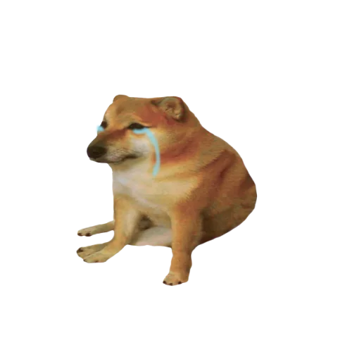

{% extends "base.html" %}
{%block title%} <title>IFLNET</title> 
<link rel="stylesheet" href="../static/css/home/main.css">
{%endblock%} 

{% block content %}
    
    <section class="ana">
        <div class="yazilar">
            <ul class="yazi">
                {% if arama %}
            <div class="aratma">
                <span class="ara-sonucu"> '{{aranan}}' araması üzerine {{arama_bulunan}} adet sonuç bulunmuştur. </span>
            </div>
            {% endif %}
                {% if yazilar %}
                    {% for yazi in yazilar|reverse %}
                        <a class="yazi-link" href="/yazi/{{yazi.baslik}}"> <li>
                            
                            <div class="post-ici">
                                <div class="baslik-kismi">
                                    <span class="baslik-class"> {{yazi.baslik}} </span><span class="uzat"></a></span>
                                    {% if c_user.id == yazi.user_id %}
                                    <a href="/yazi/{{yazi.baslik}}/kaldir"></a>                                       
                                    {% endif %}
                                    
                                    <a class="yazi-link" href="/yazi/{{yazi.baslik}}">
                                </div>
                                <br> <div class="yazi-icerik">
                                    {{yazi.message|safe}}
                                </div> </div> </li></a>
                    {% endfor %}
                
                {% else %}
                    <div class="bulunamadi">
                        <h3>Hiçbir yazı bulunamadı.</h3> 
                    </div>
                    

                {% endif %}
                
                
            </ul>
        </div>

        

        
        {% if not arama %}
        <div class="filtre" id="filtre">
            <ul>
                <div class="label-bas">
                    {% if filtre %}
                    <a href="/"><span class="aktif-label">Filtreleri <br>Kaldır</span></a>
                    {% else %}
                    <span class="deaktif-label"><b>Filtrele</b></span>
                    {% endif %}
                </div>
               
                

                {% for kategori in kategoriler %}
                    {% if filtre == kategori %}

                        <li class="aktif" ><a href="/" name="aktif"> {{kategori}} ✓</a></li>
                    {% else %}

                        <li><a href="http://127.0.0.1:5000/?filter={{kategori}}">{{kategori}}</a></li>
                    {% endif %}
                {% endfor %}
            </ul>
        </div>
        {% endif %}
        


    </section>

<script src="../static/js/home/scripts.js"></script>
{% endblock %}
